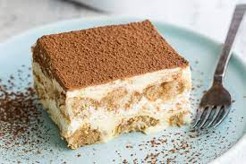

Tiramisu

Tiramisu recipe
A Creamy cake consisting of coffee, cream, cookies and cocoa powder
Ingredients
- Coffee
- Egg Yolks
- Sugar
- Milk
- Heavy Cream
- Vanilla
- Mascarpone
- Rum
- Ladyfingers
- Cocoa Powder
-
Cook the egg yolks, sugar, and milk until slightly thickened. Let cool
slightly, then chill in the fridge for about an hour. When the filling
has fully chilled, mix in mascarpone cheese.
- Beat heavy cream with vanilla extract until stiff peaks form.
-
Combine coffee and rum in a small bowl. Pour mixture over ladyfingers
that have been split in half lengthwise.
-
Line the bottom of a baking dish with soaked ladyfingers. Spread half
of the mascarpone mixture over the ladyfingers, then half of the
whipped cream over that. Repeat in the same order. Dust with cocoa
powder.